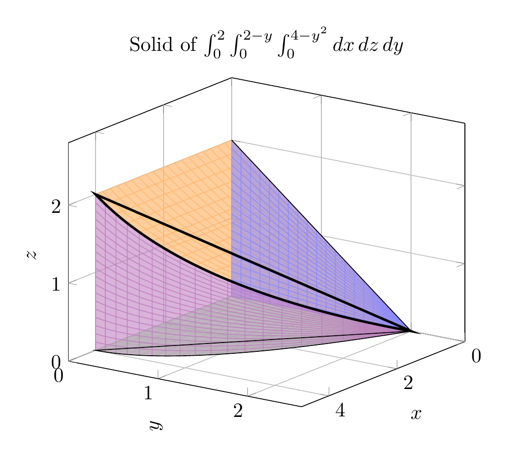

Please solve the problem in the following image.
(Image `20260928_232306_489412_utc_0800_0.png`. Alt text: Image: human_20260928_232306_489412_utc_0800)
20260928_232306_489412_utc_0800_0.png
End of problem
Answer
# Sketching the Solid of $\int_0^2 \int_0^{2-y} \int_0^{4-y^2} dx\,dz\,dy$
## Step 1: Read the bounds off the integral
The order of integration is $dx\,dz\,dy$, so from the outside in:
$$
0 \le y \le 2, \qquad 0 \le z \le 2-y, \qquad 0 \le x \le 4-y^2.
$$
Every lower bound is $0$, so the solid lies entirely in the **first octant**. The bounding surfaces are:
- $x = 4 - y^2$ (a **parabolic cylinder** with generators parallel to the $z$-axis) and $x = 0$ (the $yz$-plane);
- $z = 2 - y$ (a **plane**) and $z = 0$ (the $xy$-plane);
- $y = 0$ and $y = 2$ (the ends where the other bounds meet).
## Step 2: Understand the solid slice by slice
Fix a value of $y \in [0,2]$. The slice is a **rectangle** parallel to the $xz$-plane:
$$
0 \le x \le 4-y^2, \qquad 0 \le z \le 2-y,
$$
of area $A(y) = (4-y^2)(2-y)$. This rectangle:
- has its **largest** size $4 \times 2$ at $y = 0$;
- **shrinks to a point** at $y = 2$ (both $4-y^2 \to 0$ and $2-y \to 0$).
So the solid is a wedge-like region built from these shrinking rectangles. The top face is the plane $z = 2-y$ over the base, and the far side is the parabolic cylinder $x = 4-y^2$. The edge where the plane and the parabolic cylinder meet is the curve $\bigl(4-y^2,\ y,\ 2-y\bigr)$, running from $(4,0,2)$ down to $(0,2,0)$.
## Step 3: The projections (what you draw by hand)
- **In the $xy$-plane (base, $z=0$):** the region $0 \le y \le 2$, $0 \le x \le 4-y^2$, i.e. the area under the parabola $x = 4-y^2$ (or $y = \sqrt{4-x}$) from $x=0$ to $x=4$.
- **In the $yz$-plane (back face, $x=0$):** the triangle $0 \le y \le 2$, $0 \le z \le 2-y$.
The plots below show the base region and the triangular profile, then the full 3D solid.
## Step 4: Verify with the volume
$$
V = \int_0^2 \int_0^{2-y} \int_0^{4-y^2} dx\,dz\,dy
= \int_0^2 (4-y^2)(2-y)\,dy
= \int_0^2 \left(8 - 4y - 2y^2 + y^3\right) dy
$$
$$
= \left[8y - 2y^2 - \tfrac{2}{3}y^3 + \tfrac{1}{4}y^4\right]_0^2
= 16 - 8 - \tfrac{16}{3} + 4 = \boxed{\dfrac{20}{3}}
$$
The positive volume confirms the bounds describe a coherent, non-degenerate solid (verified numerically with SymPy: $V = 20/3 \approx 6.67$).
## Summary of the sketch
The solid is the wedge in the first octant:
- **bottom:** the parabolic base region $0 \le x \le 4-y^2$ on $z = 0$;
- **top:** slanted plane $z = 2-y$;
- **front/left:** the triangular face on $x = 0$ with vertices $(0,0,0)$, $(0,2,0)$, $(0,0,2)$;
- **back/right:** the parabolic cylinder wall $x = 4-y^2$;
- it tapers to the point $(0,2,0)$, with the curved edge $\bigl(4-y^2, y, 2-y\bigr)$ from $(4,0,2)$ to $(0,2,0)$.
$$
\boxed{\text{Solid in the first octant under } z=2-y \text{ over } 0\le y\le 2,\ 0\le x\le 4-y^2;\quad V=\frac{20}{3}}
$$
---
pgfplots_0.png
---
**Figure 1 (Step 3):** Left — the base region $D$ in the $xy$-plane bounded by the parabola $x = 4-y^2$. Right — the triangular profile in the $yz$-plane under the line $z = 2-y$. These two 2D regions are the key to sketching the solid by hand.
---
\documentclass[border=10pt]{standalone}
\usepackage{pgfplots}
\pgfplotsset{compat=1.18}
\begin{document}
\begin{tikzpicture}
\begin{axis}[
view={125}{20},
axis lines = box,
xlabel = {$x$}, ylabel = {$y$}, zlabel = {$z$},
xmin=0, xmax=4.8, ymin=0, ymax=2.6, zmin=0, zmax=2.8,
grid=major,
title={Solid of $\int_0^2\int_0^{2-y}\int_0^{4-y^2} dx\,dz\,dy$},
]
% Top slanted face z = 2-y, over 0<=x<=4-y^2 (parametric)
\addplot3[surf, shader=flat, faceted color=orange!90, color=orange!55, opacity=0.7,
domain=0:2, y domain=0:1, samples=20]
({(4-x^2)*y}, {x}, {2-x});
% Bottom face z = 0 (green)
\addplot3[surf, shader=flat, faceted color=green!60!black, color=green!40, opacity=0.5,
domain=0:2, y domain=0:1, samples=20]
({(4-x^2)*y}, {x}, {0});
% Back face x = 0 (blue triangle)
\addplot3[surf, shader=flat, faceted color=blue!70, color=blue!45, opacity=0.6,
domain=0:2, y domain=0:1, samples=20]
({0}, {x}, {y*(2-x)});
% Parabolic cylinder face x = 4-y^2 (purple)
\addplot3[surf, shader=flat, faceted color=violet, color=violet!50, opacity=0.6,
domain=0:2, y domain=0:1, samples=20]
({4-x^2}, {x}, {y*(2-x)});
% Intersection curve of z=2-y and x=4-y^2
\addplot3[black, very thick, domain=0:2, samples=40]
({4-x^2}, {x}, {2-x});
\addplot3[black, dashed, domain=0:2, samples=40]
({4-x^2}, {x}, {0});
\addplot3[black, dashed, domain=0:2, samples=40]
({0}, {x}, {2-x});
\end{axis}
\end{tikzpicture}
\end{document}

pgfplots_1.png
---
**Figure 2 (Step 2):** The 3D solid. Orange — top plane $z = 2-y$; green — base on $z=0$; blue — triangular face on $x=0$; purple — parabolic cylinder $x = 4-y^2$; thick black curve — the intersection edge $(4-y^2,\,y,\,2-y)$ from $(4,0,2)$ to $(0,2,0)$.